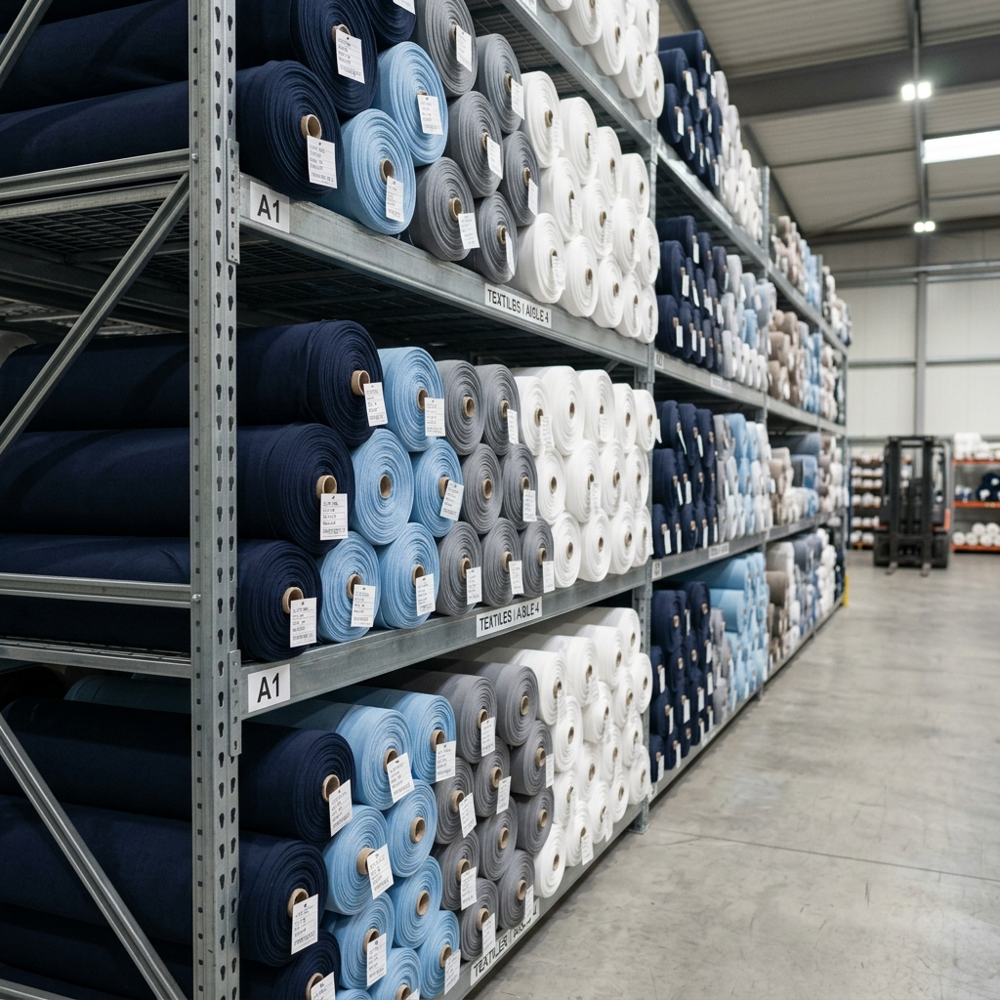

ART. 4090
Más pedidoJersey Peinado 20/1
Jersey peinado de mayor cuerpo dentro de la línea. Remeras con buena estructura y prendas de uso diario.
- Ancho
- 0,90 m tubular
- Título
- 20/1
- Composición
- Algodón 100%
- Rinde
- 3,10 m/kg
Fabricamos tejidos de punto. Jersey, Ribb, Frisa, Rústico y Morley con calidad constante, fidelidad de color y disponibilidad inmediata.
Colores en stock
Despacho promedio
PRODUCCIÓN A MEDIDA

Somos una fábrica textil especializada en tejidos de punto. Producimos jersey, ribb, frisa, rústico y morley garantizando calidad constante y fidelidad de color en cada lote. Contamos con nuestro centro de distribución en el barrio de Flores, con amplio lugar para estacionar cómodamente.
Mismo estándar en cada metro
Disponibilidad inmediata de los tejidos base
El mismo tono por lote
Sin intermediarios, precio de fábrica
Elegí la familia y el artículo para ver sus datos técnicos. Pedí tu muestra por WhatsApp.
Jersey peinado de mayor cuerpo dentro de la línea. Remeras con buena estructura y prendas de uso diario.
El título más versátil del catálogo. Base para remeras, vestidos, pijamas, ropa interior y bebés.
Jersey peinado más fino y liviano, de excelente caída. Remeras de tacto suave, ropa interior y prendas de verano.
Tejido de punto cardado, con mayor suavidad y calidez al tacto. Ideal para prendas de segunda piel y uso prolongado.
Jersey cardado preparado para procesos de lavado y desgaste en prenda terminada.
Tejido de punto con elasticidad superior. Recupera la forma, ideal para prendas ajustadas, bodies y ropa interior.
Tejido perchado de alto gramaje con interior afelpado. Buzos, camperas y abrigo de larga duración.
Tejido perchado de proceso cardado, con interior más suave y voluminoso. Máximo abrigo en prendas de invierno.
Frisa sin poliéster. Máxima transpirabilidad y suavidad natural, ideal para marcas que priorizan fibras naturales.
Frisa de menor gramaje para entretiempo. Abriga sin pesar, perfecta para primavera-verano o climas templados.
French terry peinado sin perchar, con interior suave. Joggers, buzos y prendas deportivas de media estación.
French terry cardado con interior voluminoso. Mayor suavidad y cuerpo, ideal para prendas de abrigo medio.
French terry de algodón 100% con interior rústico. Transpirable y versátil para entretiempo.
Rústico elastizado con interior en rústico. Caída fluida y mayor elasticidad para prendas de abrigo con movimiento.
Tejido acanalado 1×1 de algodón puro. Complemento clásico para cuellos, puños y terminaciones.
Acanalado fino elastizado. Complemento para frisa, cuellos y puños con buena recuperación.
Acanalado fino de algodón puro. Transpirable y de tacto natural para terminaciones de calidad.
Cuatro etapas en planta que garantizan plazo, calidad y color.
Telares circulares de última generación. Tejido uniforme, sin barrados ni defectos de máquina.
Tintorería con espectrofotómetro y curva de color. Fidelidad cromática verificada lote a lote.
Inspección de gramaje, ancho, fijeza al lavado y defectos. Cada partida queda registrada.
Rollos etiquetados con tejido, color, lote y peso. Envío en 24–48 hs hábiles desde planta.
No revendemos tela. La tejemos, la tiñemos, la inspeccionamos y la despachamos.
Producimos la cantidad y los colores que necesitás para tu producción.
Espectrofotómetro y muestrario controlado. El azul de enero es el azul de diciembre.
Tejidos base siempre disponibles. Tu producción no frena por falta de tela — eso te lo aseguramos.
Comprás directo al fabricante. Sin recargo de intermediarios, sin sorpresas en cada compra.
Logística optimizada desde planta. Si está en stock, sale en 48 hs hábiles a todo el país.
Hablás con gente que sabe de tela. Te asesoramos en gramaje, composición y comportamiento de cada tejido.
Si no encontrás la respuesta acá, escribinos por WhatsApp. Respondemos en menos de 2 horas hábiles.
Escribinos por WhatsApp →Trabajamos por rollo. Para colores en stock: desde 1 rollo. Para colores especiales (teñidos a medida o muestras Pantone), el mínimo es 200 kg por color.
Sí, sin cargo y a todo el país. Pedí tus muestras por WhatsApp indicando tejido y colores de interés. Las despachamos en 48 hs hábiles.
Transferencia bancaria, efectivo y cheque. Para clientes recurrentes ofrecemos cuenta corriente con plazo a convenir según volumen.
Sí, despachamos a todo el país. Coordinamos por encomienda, transporte propio o el de tu confianza. Retiro desde planta o puerta a puerta según el caso.
Productos en stock: 24 a 48 hs hábiles. Pedidos a teñir según color: 7 a 12 días hábiles, dependiendo de la complejidad.
Sí. Mandanos referencia (código Pantone, recorte físico o foto en condiciones controladas) y te confirmamos color, plazo y mínimo.
Etiqueta con articulo, código de color, número de lote y peso real. Cada rollo es trazable a la partida y al control de calidad correspondiente.